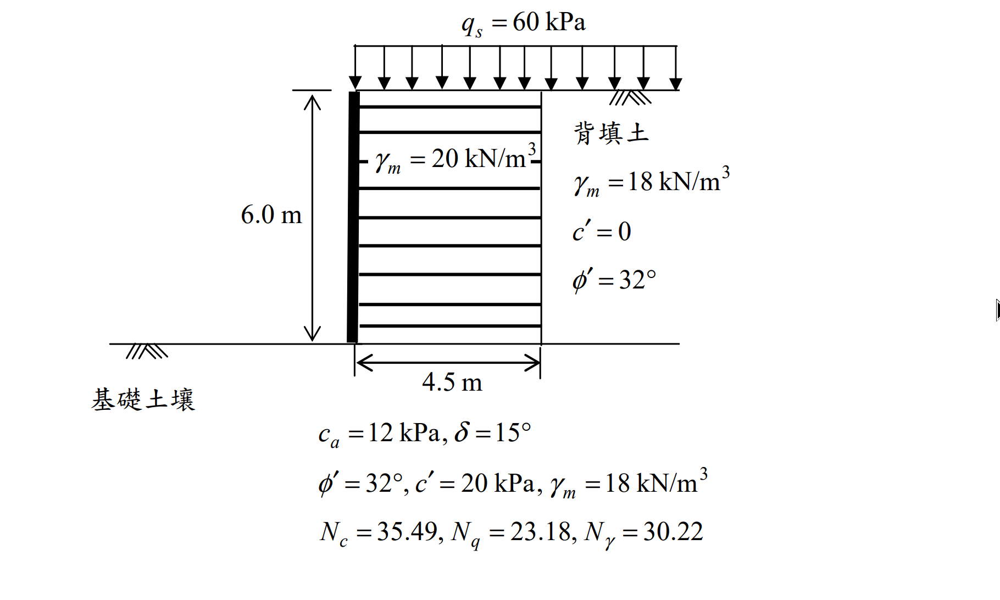

考題編號：SM-2016-3
主分類： SM-U3 側向土壓力與擋土結構
副分類： SM-U2 淺基礎之支承力與沉陷量
分析法： 有效應力法
標籤： 加勁擋土牆 外部穩定 抗滑 抗傾覆 承載力
1. 原始題目重述 (Problem Restatement)
下圖所示為直立 6.0 m 高加勁擋土牆，加勁材埋入深度為 4.5 m，假設加勁土壤視為一剛體，單位重 $\gamma_m = 20 \text{ kN/m}^3$，背填土壤為砂質土壤，單位重為 $\gamma_b = 18 \text{ kN/m}^3$，背填土有效剪力強度參數 $\phi' = 32^\circ$、$c' = 0$；此背填土及加勁土體座落於某粘土質沉泥基礎土壤上，其與加勁土體間界面的剪力強度參數 $c_a = 12 \text{ kPa}$、$\delta = 15^\circ$，基礎土壤之有效剪力強度參數 $\phi' = 32^\circ$、$c' = 20 \text{ kPa}$，單位重 $\gamma_f = 18 \text{ kN/m}^3$，加勁土與背填土上方承受 $q_s = 60 \text{ kPa}$ 均佈荷載。
(一) 試分析此加勁擋土牆之抗傾倒、抗滑安全係數為何與是否適宜？如不適宜，建議補救措施為何？（12 分）
(二) 請分析此加勁土體基礎承載力安全係數為何與是否適宜？如不適宜，建議補救措施為何？（8 分）
(三) 請說明加勁擋土牆系統設計與施工注意事項。（5 分）

圖說：加勁擋土牆高 $6.0\text{m}$，加勁體寬 $4.5\text{m}$，上方有 $60\text{kPa}$ 超載重，背填土為砂土 $(\phi'=32^\circ)$，基礎土為黏土質沉泥，並給定承載力係數。
2. 考題核心精神與出題者意圖 (Core Concepts & Examiner's Intent)
本題測驗考生對於加勁擋土牆外部穩定分析 (External Stability) 的熟練度。
出題者期望考生將加勁土體視為一整體剛性區塊，計算背填土與超載重所造成之主動側向土壓力與傾覆力矩，並評估該剛體之抗滑、抗傾覆與承載能力。本題陷阱在於均佈超載重 $q_s$ 同時作用於「加勁土」與「背填土」上方，因此在計算驅動力時會產生側向推力，在計算抵抗力時亦會增加加勁體的正向垂直荷重，不可遺漏。
3. 解題戰略地圖與陷阱分析 (Strategic Roadmap & Trap Analysis)
- 主動土壓力與推力計算：利用 Rankine 理論求得背填土之 $K_a$。計算土壤自重及均佈超載所產生之側向推力 $P_h$ 與傾覆力矩 $M_O$。
- 抗滑與抗傾倒檢核：加總垂直荷重 $V$（包含加勁土重與上方超載）。利用底部界面參數 $(c_a, \delta)$ 計算抗滑力，求出 $FS_{SL}$ 與 $FS_{OT}$。
- 承載力檢核：由於合力偏心，利用合力矩與總垂直力求出偏心距 $e$。採用 Meyerhof 有效寬度法 $L' = L - 2e$ 求出基礎底面等值均佈應力 $q'{max}$，並以此寬度計算極限承載力 $q{ult}$，進而求出 $FS_{BC}$。
- 改善措施與注意事項：針對未達標的安全係數提出實務對策（如增加加勁長度、深埋等），並補充設計與施工之通則。
3.5 變數層次分析 (Variable Hierarchy Analysis)
最終目標
計算加勁擋土牆之抗滑、抗傾覆與基礎承載力安全係數，並針對不足項目提出改善對策。
本題關鍵公式（依計算順序）
- Step 1 主動土壓力係數：$K_a = \tan^2(45^\circ - \frac{\phi_b'}{2})$
- Step 2 水平推力：$P_h = \frac{1}{2}\boxed{K_a} \gamma_b H^2 + \boxed{K_a} q_s H$
- Step 3 傾覆力矩：$M_O = (\frac{1}{2}\boxed{K_a} \gamma_b H^2)\frac{H}{3} + (\boxed{K_a} q_s H)\frac{H}{2}$
- Step 4 總垂直力：$V = \gamma_m H L + q_s L$
- Step 5 穩定安全係數：$FS_{SL} = \frac{c_a L + \boxed{V} \tan\delta}{\boxed{P_h}}$, $FS_{OT} = \frac{\boxed{V}(L/2)}{\boxed{M_O}}$
- Step 6 合力偏心距與有效寬度：$e = \frac{L}{2} - \frac{\boxed{V}(L/2) - \boxed{M_O}}{\boxed{V}}$, $L' = L - 2\boxed{e}$
- Step 7 承載力安全係數：$q_{ult} = c_f' N_c + \frac{1}{2} \gamma_f \boxed{L'} N_\gamma$, $FS_{BC} = \frac{\boxed{q_{ult}}}{\boxed{V}/\boxed{L'}}$
L1：題目直接給定
| 符號 | 數值 | 說明 |
|---|---|---|
| $H$ | 6.0 m | 加勁擋土牆高度 |
| $L$ | 4.5 m | 加勁材埋入深度（加勁體寬度） |
| $\gamma_m$ | 20 kN/m³ | 加勁土壤單位重 |
| $q_s$ | 60 kPa | 地表均佈超載重 |
| $\gamma_b$ | 18 kN/m³ | 背填土壤單位重 |
| $\phi_b'$ | 32° | 背填土有效內摩擦角 |
| $c_a$ | 12 kPa | 底部界面凝聚力 |
| $\delta$ | 15° | 底部界面摩擦角 |
| $c_f'$ | 20 kPa | 基礎土有效凝聚力 |
| $\gamma_f$ | 18 kN/m³ | 基礎土單位重 |
| $N_c, N_q, N_\gamma$ | 35.49, 23.18, 30.22 | 基礎土之 Meyerhof 承載力係數 |
L2：需知識點推導
外部水平推力與傾覆力矩
| 符號 | 公式／來源 | 卡關? |
|---|---|---|
| $K_a$ | $\tan^2(45^\circ - \phi_b'/2)$ | |
| $P_h$ | $P_{a1} + P_{a2} = 0.5K_a\gamma_b H^2 + K_a q_s H$ | |
| $M_O$ | $P_{a1}(H/3) + P_{a2}(H/2)$ | |
抗滑與抗傾覆分析
| 符號 | 公式／來源 | 卡關? |
|---|---|---|
| $V$ | $\gamma_m H L + q_s L$ | |
| $FS_{SL}$ | $(c_a L + V \tan\delta) / P_h$ | |
| $FS_{OT}$ | $(V \times L/2) / M_O$ | |
承載力分析 (Meyerhof 有效寬度法)
| 符號 | 公式／來源 | 卡關? |
|---|---|---|
| $e$ | $L/2 - (M_R - M_O)/V$ | |
| $L'$ | $L - 2e$ | |
| $q'{max}$ | $V / L'$ | |
| $q{ult}$ | $c_f' N_c + 0.5 \gamma_f L' N_\gamma$ | |
| $FS_{BC}$ | $q_{ult} / q'_{max}$ | |
L3：深層知識（不懂就卡住）
| 知識點 | 說明 | 卡關? |
|---|---|---|
| 剛體假設 | 加勁擋土牆外部穩定分析時，將加勁區 $(H \times L)$ 視為一完整剛體 | |
| 有效寬度法 | 承受偏心載重之基礎，應以 Meyerhof 有效寬度 $B' = B - 2e$ 計算極限承載力，並以 $q'_{max} = V/B'$ 檢核 | |
| 超載重之影響 | 均佈超載 $q_s$ 同時增加主動推力 (不利) 以及垂直正向力 (有利)，計算抵抗力矩與摩擦力時須包含之 |
4. 步驟化詳細計算過程 (Step-by-Step Detailed Calculation)
(一) 抗傾倒與抗滑安全係數分析
1. 主動土壓力與驅動力矩
背填土主動土壓力係數：
$$ K_a = \tan^2\left(45^\circ - \frac{32^\circ}{2}\right) = \tan^2(29^\circ) = 0.3073 $$
作用於加勁體後方之水平驅動力 $P_h$ 分為土壤自重與超載兩部分：
- 土壤自重推力：$P_{a1} = \frac{1}{2} K_a \gamma_b H^2 = \frac{1}{2} \times 0.3073 \times 18 \times 6.0^2 = 99.56 \text{ kN/m}$
（作用於距牆底 $H/3 = 2.0 \text{ m}$ 處）
- 超載重推力：$P_{a2} = K_a q_s H = 0.3073 \times 60 \times 6.0 = 110.63 \text{ kN/m}$
（作用於距牆底 $H/2 = 3.0 \text{ m}$ 處）
總驅動水平力：
$$ P_h = P_{a1} + P_{a2} = 99.56 + 110.63 = 210.19 \text{ kN/m} $$
傾覆力矩 $M_O$ (對牆趾取矩)：
$$ M_O = 99.56 \times 2.0 + 110.63 \times 3.0 = 199.12 + 331.89 = 531.01 \text{ kN-m/m} $$
2. 垂直荷重與抵抗力矩
加勁土體上方亦承受超載重，故總垂直力 $V$ 包含加勁土重與超載重：
$$ V = W_{soil} + W_{sur} = (\gamma_m \times H \times L) + (q_s \times L) $$
$$ V = (20 \times 6.0 \times 4.5) + (60 \times 4.5) = 540 + 270 = 810 \text{ kN/m} $$
抵抗力矩 $M_R$ (重心位於 $L/2 = 2.25 \text{ m}$ 處)：
$$ M_R = V \times \frac{L}{2} = 810 \times 2.25 = 1822.50 \text{ kN-m/m} $$
3. 抗傾覆安全係數 $(FS_{OT})$
$$ FS_{OT} = \frac{M_R}{M_O} = \frac{1822.50}{531.01} = \boxed{3.43} $$
評估： $FS_{OT} = 3.43 \ge 2.0$，抗傾覆適宜 (安全)。
4. 抗滑安全係數 $(FS_{SL})$
依據給定之加勁土與基礎土間界面參數 $(c_a = 12 \text{ kPa}, \delta = 15^\circ)$：
抗滑力 $F_R = c_a L + V \tan\delta$
$$ F_R = 12 \times 4.5 + 810 \times \tan(15^\circ) = 54 + 810 \times 0.2679 = 54 + 217.00 = 271.00 \text{ kN/m} $$
$$ FS_{SL} = \frac{F_R}{P_h} = \frac{271.00}{210.19} = \boxed{1.29} $$
評估： $FS_{SL} = 1.29 < 1.5$，抗滑不適宜 (不安全)。
抗滑補救措施建議：
1. 增加加勁材長度 $L$：可同時增加結構自重 $V$ 與底部摩擦面積，有效提升抗滑力。
2. 牆底設置抗滑榫 (Shear Key)：藉由抗滑榫伸入基礎土層中以激發被動土壓力抵抗滑動。
3. 增加牆基埋置深度：增加牆趾前方之被動土壓力抗力。
4. 地盤改良：置換或改良底部土壤，提高界面摩擦參數 $c_a, \delta$。
(二) 基礎承載力安全係數分析
1. 偏心距與有效寬度
合力作用點至牆趾距離 $x = \frac{M_R - M_O}{V} = \frac{1822.50 - 531.01}{810} = \frac{1291.49}{810} = 1.594 \text{ m} $
偏心距 $e = \frac{L}{2} - x = 2.25 - 1.594 = 0.656 \text{ m} $
檢核：$e = 0.656 \text{ m} < \frac{L}{6} = 0.75 \text{ m}$，底面無拉應力。
Meyerhof 有效寬度 $L'$：
$$ L' = L - 2e = 4.5 - 2 \times 0.656 = 3.188 \text{ m} $$
2. 等值最大承載壓力 $(q'_{max})$
$$ q'_{max} = \frac{V}{L'} = \frac{810}{3.188} = 254.08 \text{ kPa} $$
3. 極限承載力 $(q_{ult})$
採用 Meyerhof 理論，無埋置深度 $(D_f = 0, q=0)$：
$$ q_{ult} = c_f' N_c + \frac{1}{2} \gamma_f L' N_\gamma $$
代入已知參數 ($c_f' = 20 \text{ kPa}, \gamma_f = 18 \text{ kN/m}^3, N_c = 35.49, N_\gamma = 30.22$)：
$$ q_{ult} = 20 \times 35.49 + \frac{1}{2} \times 18 \times 3.188 \times 30.22 $$
$$ q_{ult} = 709.80 + 866.91 = 1576.71 \text{ kPa} $$
4. 承載力安全係數 $(FS_{BC})$
$$ FS_{BC} = \frac{q_{ult}}{q'{max}} = \frac{1576.71}{254.08} = \boxed{6.21} $$
評估： $FS{BC} = 6.21 \ge 2.5 \sim 3.0$（規範容許值），基礎承載力適宜 (非常安全)。
(註：由於已適宜，故無需補救措施。若未來有不適宜之情況，可採用增加加勁長度 $L$ 或地盤改良等措施)
(三) 加勁擋土牆系統設計與施工注意事項
設計注意事項：
1. 內部穩定分析 (Internal Stability)：必須詳細檢核加勁材之「抗拉斷」及「抗拔出」安全係數，確保各層加勁材配置之長度、間距與抗拉強度充足。
2. 外部與整體穩定 (External & Overall Stability)：除上述抗滑、傾覆與承載力外，遇坡地或軟弱地層時，必須執行整體圓弧滑動破壞之穩定性分析。
3. 排水系統設計 (Drainage Design)：背填土區與加勁區後方應設置良好之排水設施 (如透水盲溝、排水管)，防止水壓累積而增加牆背推力並降低土壤強度。
施工注意事項：
1. 填土材料與夯實 (Backfill & Compaction)：應選用排水性佳、級配良好之粒料作為加勁區與背填區土壤，並分層均勻滾壓至規定之壓實度。
2. 面版保護與重機管制 (Facing Protection)：壓路機等大型夯實機具應與面版保持適當距離 (通常 $>1\text{m}$)，近面版處應改用小型夯實設備，以免推擠面版造成線形不平整或結構損壞。
3. 加勁材敷設 (Reinforcement Installation)：加勁材鋪設時應保持平整並適度拉緊，確保與面版接合處穩固無鬆脫，再行覆土壓實。
5. 關鍵爭議點與進階探討 (Critical Issues & Advanced Discussion)
- 超載重之考量：在台灣考題中，通常未特別區分超載重為活載重 (Live Load) 或靜載重 (Dead Load)，皆直接全數計入驅動力與抵抗力之計算。若考題特別聲明 $q_s$ 為活載重，則在進行保守設計時，計算抵抗傾覆力矩與底部摩擦力時會忽略作用於加勁區上方之活載重（即 $V$ 不計 $q_s \times L$），但推力計算仍包含其造成之主動土壓力。本解析依據常規考題慣例，將其視為均佈常設荷載全數列入。
- 承載力計算方法：傳統做法可能採用偏心應力公式 $q_{max} = \frac{V}{L}(1+\frac{6e}{L})$ 配合原寬度計算 $FS$，但對於加勁擋土牆，現行主流設計規範（如 AASHTO、FHWA）強烈建議採用 Meyerhof 有效寬度法 ($L' = L - 2e$) 計算極限承載力，這更能真實反映基底應力集中之破壞模式，也是本解析採用的方法。